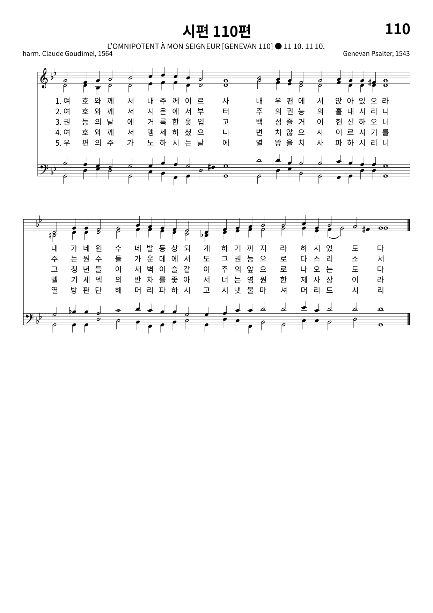

Psalm 110
L’OMNIPOTENT À MON SEIGNEUR [GENEVAN 110] · 11 10. 11 10.
English title: The LORD unto My Lord These Words Has Spoken
Tune: Genevan Psalter, 1543 · Harmony: Claude Goudimel, 1564 · Lyrics: Korean adaptation of Psalm 110 from the Korean Revised Version (AI draft adaptation · not yet theologically reviewed) · 5 stanzas
Score PDF MusicXML (for printing) MusicXML (for accompaniment, with prelude and repeats) Read Psalm 110 (Korean Revised Version)
Score
← Psalm 109B ListAccompaniment (in preparation)Psalm 111 →
Lyrics (Korean)
Stanza 1
여호와께서 내 주께 이르사
내 우편에서 앉아 있으라
내가 네 원수 네 발등상 되게
하기까지라 하시었도다
여호와께서 내 주께 이르사
내 우편에서 앉아 있으라
내가 네 원수 네 발등상 되게
하기까지라 하시었도다
Stanza 2
여호와께서 시온에서부터
주의 권능의 홀 내시리니
주는 원수들 가운데에서도
그 권능으로 다스리소서
여호와께서 시온에서부터
주의 권능의 홀 내시리니
주는 원수들 가운데에서도
그 권능으로 다스리소서
Stanza 3
권능의 날에 거룩한 옷 입고
백성 즐거이 헌신하오니
그 청년들이 새벽 이슬같이
주의 앞으로 나오는도다
권능의 날에 거룩한 옷 입고
백성 즐거이 헌신하오니
그 청년들이 새벽 이슬같이
주의 앞으로 나오는도다
Stanza 4
여호와께서 맹세하셨으니
변치 않으사 이르시기를
멜기세덱의 반차를 좇아서
너는 영원한 제사장이라
여호와께서 맹세하셨으니
변치 않으사 이르시기를
멜기세덱의 반차를 좇아서
너는 영원한 제사장이라
Stanza 5
우편의 주가 노하시는 날에
열왕을 치사 파하시리니
열방 판단해 머리 파하시고
시냇물 마셔 머리 드시리
우편의 주가 노하시는 날에
열왕을 치사 파하시리니
열방 판단해 머리 파하시고
시냇물 마셔 머리 드시리